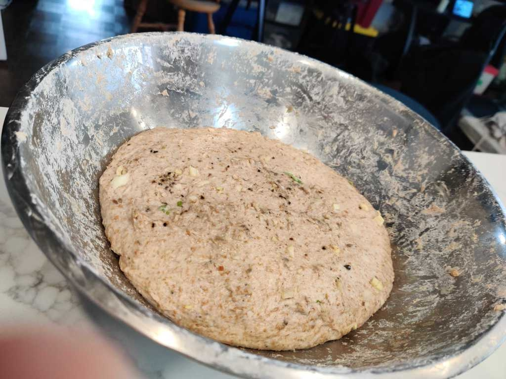
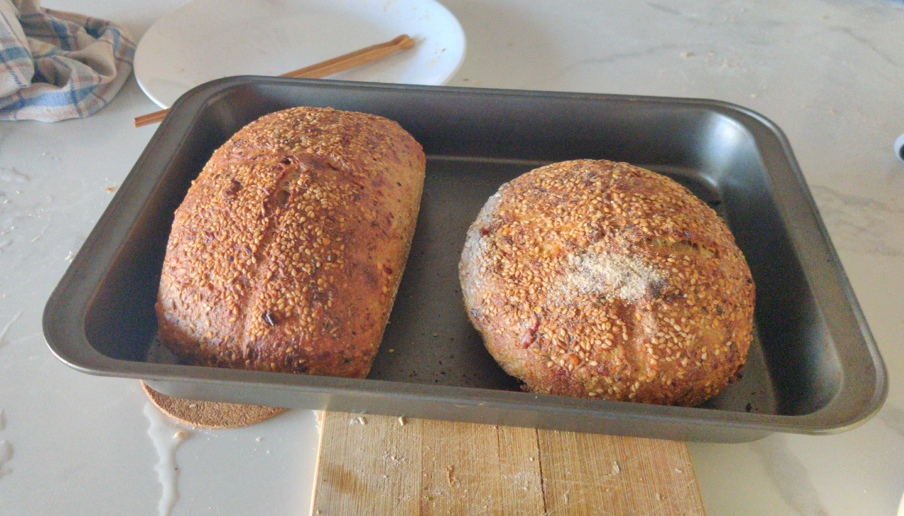
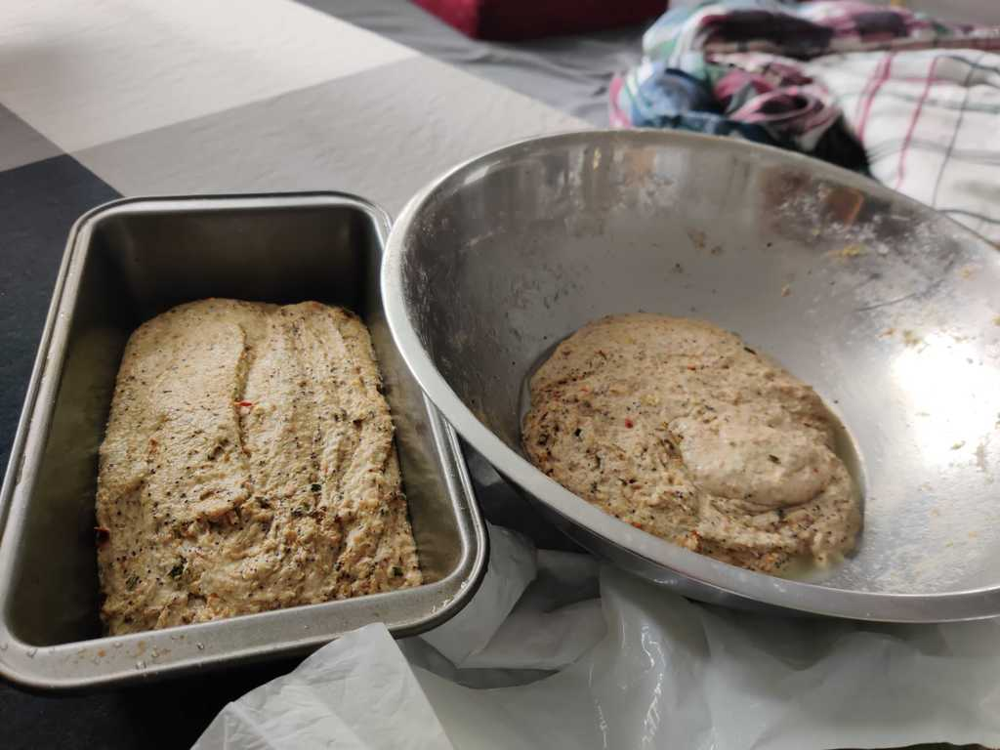
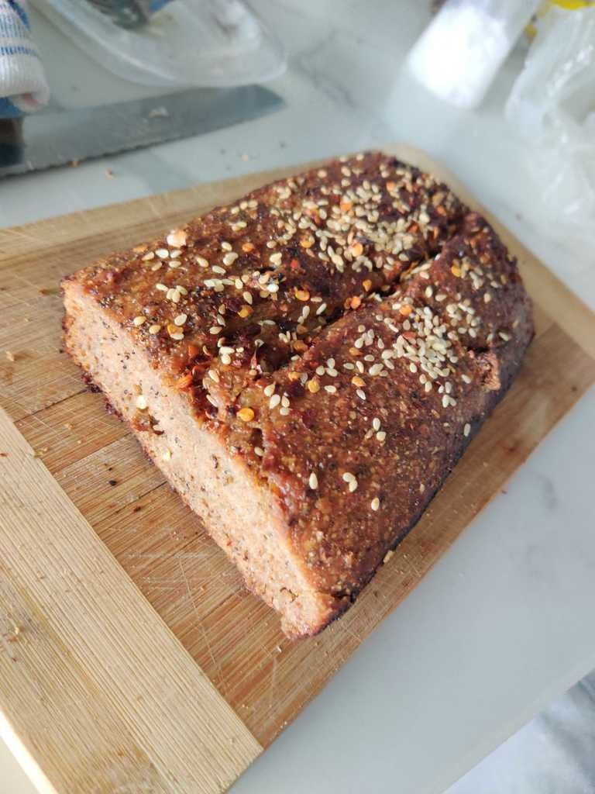

Inspired by some YouTube video 'along with work from home' due to COVID-19, I thought to do something productive with my time and try my hand at it.-
The concept is simple: mix flour and water and let it sit in a jar to rot and ferment over a few days. When the culture is built up, a "starter", this can be used to knead into dough to bake bread.
The instructions are simple, but like with all art, there are veriables in technique that will take a lifetime to master.
Somewhere in late March, 2020, I make my first batch of dough. It rises well and looks encouraging. I hope that it blooms and blossoms the oven to an angelic bread. But I have baked before, and I know that it's usually a loaf of disappointment.
   